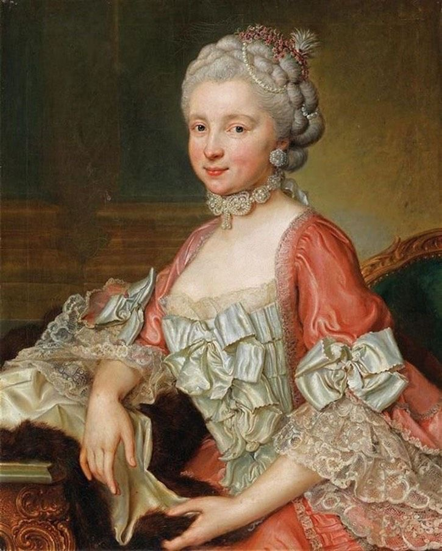
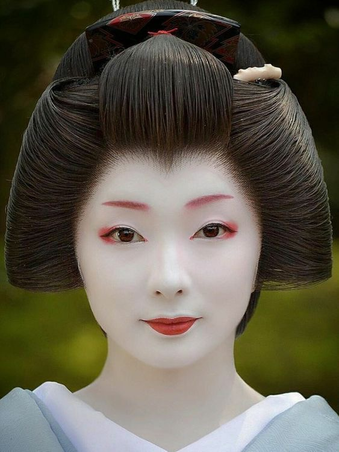
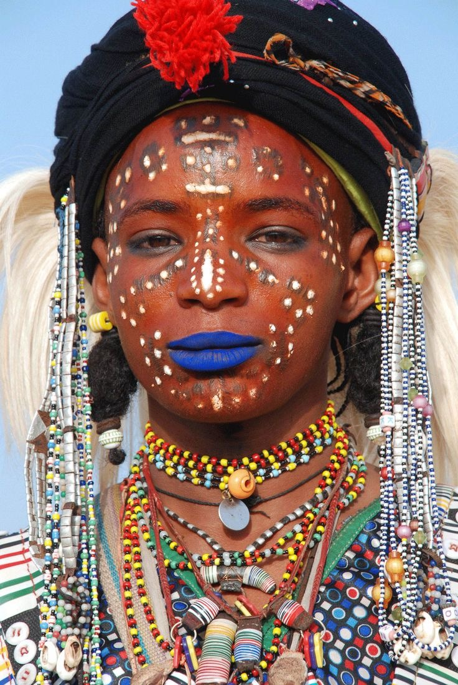

ANTIGUA ROMA

Las mujeres romanas utilizaban maquillaje a base de plomo para blanquear sus pieles. En el siglo XVI, la nobleza inglesa también adoptó esta práctica. La reina Isabel I cubría las cicatrices de la viruela con una mezcla de plomo y vinagre llamada cerusa veneciana. A largo plazo, esto podía causar decoloración de la piel, pérdida de cabello y problemas dentales.
ANTIGUA MEZOPOTANIA

En estas civilizaciones, también se usaban pigmentos naturales para maquillar los ojos, labios y mejillas. Aunque no eran tan peligrosos como el plomo o el arsénico, seguían siendo ingredientes sorprendentes para la piel.
TRIBUS

Los materiales utilizados por algunas tribus para maquillarse pueden incluir pinturas faciales a base de plomo, pigmentos naturales tóxicos, plantas y hierbas tóxicas, así como productos químicos industriales. Estos materiales pueden representar riesgos para la salud debido a la presencia de sustancias peligrosas o tóxicas. Es importante ser consciente de los posibles riesgos y buscar productos de maquillaje seguros y aprobados para su uso en la piel.
|